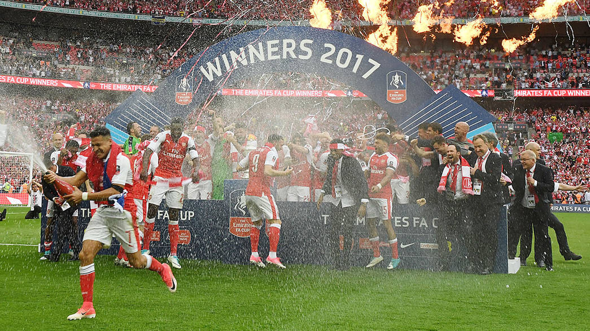
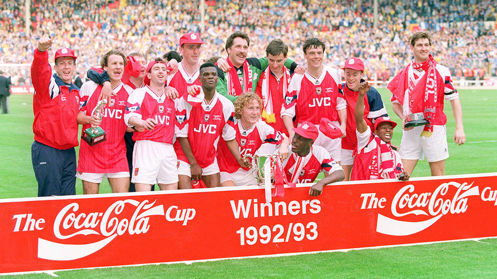
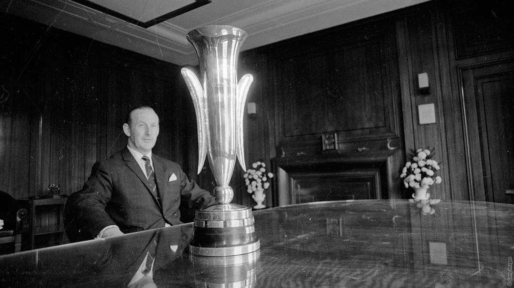
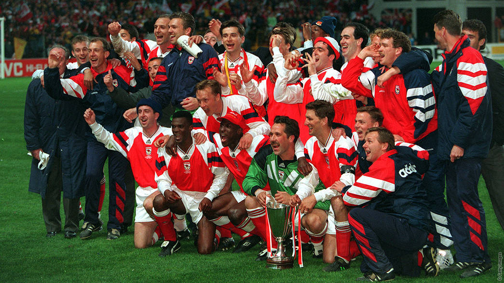
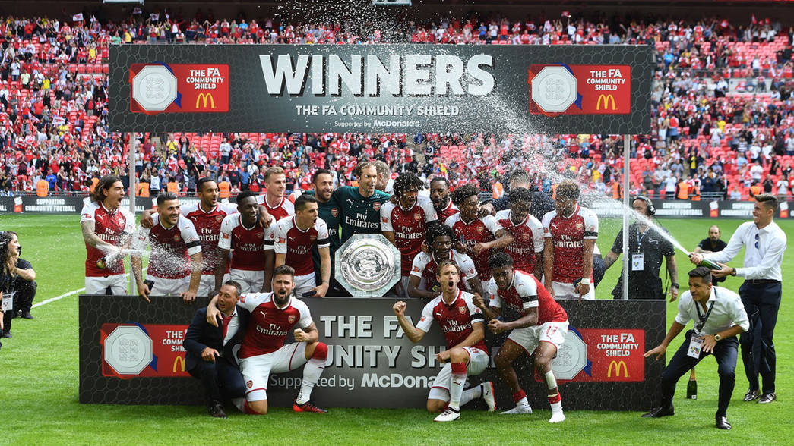

LEAGUE CHAMIPONS [13]
1930/31, 1932/33, 1933/34, 1934/35, 1937/38, 1947/48, 1952/53, 1970/71, 1988/89, 1990/91, 1997/98, 2001/02, 2003/04

FA CUP WINNERS [13]*
2017, Beat Chelsea 2-1
2015, Beat Aston Villa 4-10
2014, Beat Hull City 3-2 (aet)
2005, Beat Manchester United 5-4 on pens (aet: after 0-0 draw)
2003, Beat Southhampton 1-0
2002, Beat Chelsea 2-0
1998, Beat Newcastle United 2-0
1993, Beat Sheffield Wednesday 2-1 (aet: replay after 1-1 draw)
1979, Beat Manchester United 3-2
1971, Beat Liverpool 2-1 (aet)
1950, Beat Liverpool 2-0
1936, Beat Sheffield United 1-0
1930, Beat Huddersfield Town 2-0
LEAGUE CUP WINNERS [2]
1993, Beat Sheffield Wednesday 2-1
1987, Beat Liverpool 2-1
EUROPEAN FAIRS CUP WINNERS [1]
1970, Beat Anderlecht 4-3 on aggregate
EUROPEAN CUP WINNERS CUP WINNERS [1]
1994, Beat Parma 1-0 (in Copenhagen)
CHARITY/COMMUNITY SHEILD WINNERS [14+1 SHARED]
2017, Beat Chelsea 4-1 on pens (aet: after 1-1)
2015, Beat Chelsea 1-0
2014, Beat Manchester City 3-0
2004, Beat Manchester United 3-1
2002, Beat Liverpool 1-0
1999, Beat Manchester United 2-1
1998, Beat Manchester United 3-0
1991, Drew with Tottenham Hotspur 0-0 (shared)
1953, Beat Blackpool 3-1
1948, Beat Manchester United 4-3
1938, Beat Preston North End 2-1
1934, Beat Manchester City 4-0
1933, Beat Everton 3-0
1931, Beat West Bromwich Albion 1-0
1930, Beat Sheffield Wednesday 2-1
